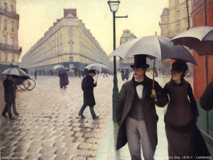

Paristechinois
虽然是总结申请，但申请过程反而是最没有什么好说的，因为申请Mines并没有像X那样要求很高的学术面试，除了正常的笔试面试外没有什么特别需要准备的。如果说Mines有什么特别喜好的话，可能有这么几样：
-学校希望申请者了解他们在申的是一个什么样的学校。前面说过Mines相对世界上其他大学而言非常特殊，而学校也不希望把一个有心科研的学生耽误在各种无聊的鸡尾酒会中。如果说读完物理本科去美国继续PhD是一条顺理成章的道路的话，那转而到Mines来上学就有些非主流了，于是学校就自然想知道是什么让他们做出了这个非主流的选择以及他们是否很清楚的知道来Mines能得到什么不能得到什么。
-Mines喜欢有一些特殊经历的学生，比如国际交流，比如与众不同的业余活动。这点上看起来不像研究生申请而像本科申请，事实上学校看重的是学生敢于尝试自己的想法，。不过真正有这些经历的申请者毕竟不多，大多数人还是跟我一样很普通的学生，所以也不必纠结于此。
至于本科成绩，太次了当然过不了，可每年也都有被所有人看好的同学被刷，我个人觉得这也未必和over qualify有关，每个招生老师都有自己特别的喜好，比如Mines曾经连续3年没在大陆招女生，谁知道他们究竟有什么怪癖呢！不过最重要的是说服学校自己的确了解Mines并且做出了慎重的选择。
作者简介：
丁毅
2006-2010：南京大学物理学院
2010-2013：Mines ParisTech
丁毅谈申请

2012年5月10日星期四